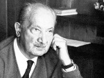

Ölümünün ardından on yıllar geçmiş olmasına rağmen Alman filozof Martin Heidegger’le (1889–1976) ilgili tartışmalar halen devam etmektedir. Hem taraftarları hem de karşıtları Heidegger’in varoluşçuluk, din ve dille ilgili yapıtlarının dünya felsefe tarihinde önemli bir etki yaptığı noktasında hemfikirdirler. Ancak Naziler’le olan bağlantısı, kolunda gamalı haç bandı taşıması, öğrencilerine Nazi selamı vermesi ve 1936 yılına kadar derslerini “Heil Hitler” sloganı ile bitirmesi onun ününü pek çok eleştirmenin gözünde lekeli hale getirmektedir.

Heidegger, Almanya’nın güneybatısında doğmuştu. Ailesi Katolikti. İlk akademik ilgi alanı teolojiydi. Kısa bir süre rahiplik eğitimi aldı. Daha sonra felsefeyle ilgilenmeye başladı. 1919 yılında Katolik inancını bıraktı. 1923 yılında bir Alman üniversitesinde ders vermeye başladı. En ünlü eserleri 1920’ler ve 1930’larda yayınlandı. İlk eseri Being and Time (Varlık ve Zaman / 1927) Avrupa felsefesinde çığır açtı.
1930’lardan önce asla politikaya ilgi duymamıştı.1933 yılında Hitler iktidara gelince ünlü filozof bu başarıyı alkışladı ve Nazi Partisi’ne katıldı. Çok geçmeden ders verdiği üniversiteye rektör seçildi. Daha sonra çok eleştirilecek olan bir konuşma ile göreve başladı: “Teoriler ve ideallerin sizin yol göstericiniz olmasına izin vermeyin. Führer, yalnızca o ve onun yasası Almanya’nın ebedi gerçekliğidir.” 1930’ların sonlarına doğru Hitler konusunda kişisel olarak hayal kırıklığına uğramış olsa da II. Dünya Savaşı bitene kadar parti üyeliğininden ayrılmadı.
Savaş sonrasında Heidegger’in ders vermesi yasaklandı. Onun Nazilerin şeytani yüzünü anlayamayacak kadar naif olduğunu savunan eski sevgilisi Yahudi filozof Hannah Arendt (1906–1975) sayesinde itibarı daha sonra iade edilmiştir. Heidegger hayatının sonraki dönemlerinde Nazi dönemi hakkında konuşmayı reddetti. Bu konudaki tek istisna bir Alman dergisine verdiği ve ölümünün ardından yayınlanan ropörtajdır.
Heidegger savaştan sonra da yazmaya devam etti. Yazılarının Fransız felsefesi üzerinde büyük bir etkisi oldu. Ancak genelde anlaşılması zor bir dil kullanmıştır. Amerikalı bir eleştirmen yazılarını “saçmalık ve bayalığın nahoş bir karışımı” olarak adlandırmıştır.
Ek Bilgiler
1- I. Dünya Savaşı başlayınca Heidegger Alman Ordusu’na yazılmış ama iki ay sonra sağlık sorunları nedeniyle terhis edilmiştir. Savaşın sonlarına doğru yeniden göreve çağrılmış, 1918’deki Alman yenilgisinden önce Batı cephesinde çarpışmıştır.
2- II. Dünya Savaşı sırasında Heidegger’in pek çok öğrencisi ABD’de mülteci olmuştur. Bunlardan ikisi ideolojik rakipleridir: Amerikan yeni muhafazakarlığının kahramanı olacak olan Leo Strauss (1899–1973) ve 1960 ve 1970’lerde sol kanat radikalleri etkileyen Herbert Marcuse (1898–1979).
3- Heidegger, 1944 yazında üniversitesi tarafından dışlanmaya başladı. Rhine yakınlarında Nazi ordusu için siper kazmakla görevlendirilmişti.